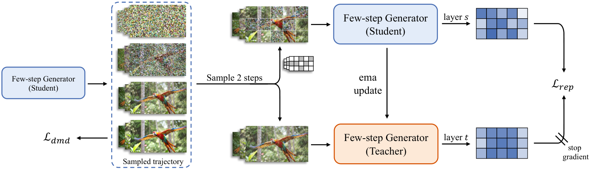

Someone learning to draw a flipbook in four quick strokes, judged only on whether each finished page looks right, makes good single pages, but objects drift between them. Add one drill: from a half-smudged page, guess how a slightly older version of yourself would sketch the clean one. Now you must track the whole scene, so the ribbon stays one ribbon and the broken wall stays broken.
네 번의 빠른 획으로 플립북을 그리는 법을 배우는데, 완성된 각 장이 그럴듯한지만 평가받는다면 한 장 한 장은 잘 그려도 장마다 물체가 흔들린다. 여기에 연습 하나를 더한다. 반쯤 번진 페이지를 보고, 조금 전의 나라면 깨끗한 페이지를 어떻게 그렸을지 맞히는 것이다. 그러면 장면 전체를 기억해야 하므로 리본은 한 가닥으로 남고 무너진 벽은 무너진 채로 남는다.
How it works: one extra branch on the DMD rollout작동 방식은 DMD 롤아웃 위에 가지 하나를 더하는 것
SF² leaves the DMD loss untouched and adds a feature-prediction branch that reuses the trajectory DMD already rolls out.
SF²는 DMD 손실을 그대로 두고, DMD가 이미 펼친 궤적을 재사용하는 특징 예측 가지를 하나 더한다.

- Two states, one trajectory.한 궤적에서 두 상태.Pick a noisier step and a cleaner step from the student's own 4-step rollout.학생 자신의 4스텝 롤아웃에서 더 노이즈 낀 스텝과 더 깨끗한 스텝을 고른다.
- Mask in space.공간 마스크.The student gets a token mosaic of both states, with one mask shared by all frames; the EMA teacher gets only the cleaner state.학생은 두 상태를 토큰 단위로 섞은 모자이크를 받는데, 마스크 하나를 모든 프레임에 똑같이 쓴다. EMA 교사는 깨끗한 상태만 받는다.
- Align features.특징 정렬.A projected student layer at 30% depth matches the teacher layer at 70% depth by cosine loss with stop-gradient.30% 깊이의 학생 층을 투영해, 70% 깊이의 교사 층과 기울기를 막은 코사인 손실로 맞춘다.
Key point: the extra signal is nearly free핵심은 추가 신호가 거의 공짜라는 것
The SF² branch takes about 6% of a training cycle, because the score critics already dominate DMD's cost.
SF² 가지는 학습 한 주기의 약 6%만 차지한다. DMD 비용은 원래 점수 비평가들이 대부분을 쓰기 때문이다.
Results: better students at the same speed결과는 같은 속도에서 더 나은 학생
Among 4-step causal students on the same backbone, SF² scores highest on VisionReward, a learned human-preference model.
같은 백본의 4스텝 인과 학생 모델 중 SF²가 사람 선호를 학습한 모델인 VisionReward에서 가장 높다.
VBench gains are smaller but hold in both settings, and the bidirectional student passes its multi-step base.
VBench 향상 폭은 작지만 두 설정 모두에서 유지되고, 양방향 학생은 여러 스텝을 쓰는 원래 모델을 넘어선다.
| Model | Latency (s) | Total | Quality | Semantic |
|---|---|---|---|---|
| Wan2.1 multi-step | 103 | 83.37 | 84.30 | 79.65 |
| CausVid, bidirectional | 4.22 | 83.19 | 84.08 | 79.63 |
| SF², bidirectional | 4.22 | 84.15 | 84.92 | 81.07 |
| Self-Forcing, causal | 0.69 | 83.74 | 84.48 | 80.77 |
| Causal-Forcing, causal | 0.69 | 84.04 | 84.59 | 81.84 |
| SF², causal | 0.69 | 84.15 | 84.67 | 82.06 |
When you distill a video model to a few steps, supervise what the student represents, not only what it outputs. An EMA self-teacher with a frame-shared mask is a cheap add-on to Self-Forcing-style autoregressive pipelines, and it also tightened camera control in the WorldPlay world model.비디오 모델을 몇 스텝으로 증류할 때는 학생이 무엇을 출력하는지뿐 아니라 무엇을 표현하는지도 감독하자. 프레임 공유 마스크를 쓰는 EMA 자기 교사는 Self-Forcing 계열 자기회귀 파이프라인에 싸게 붙일 수 있고, WorldPlay 월드 모델의 카메라 제어도 더 정확하게 만들었다.
Evidence rests on VBench and a learned reward model with no human study, and VBench Total moves only 0.11 over Causal-Forcing. The best mask ratio differs by setting (0.4 vs 0.2), and the WorldPlay gains appear only as curves.근거는 VBench와 학습된 보상 모델이고 사람 평가는 없으며, VBench Total은 Causal-Forcing보다 0.11만 오른다. 최적 마스크 비율은 설정마다 다르고(0.4와 0.2), WorldPlay 향상은 곡선 그림으로만 제시된다.